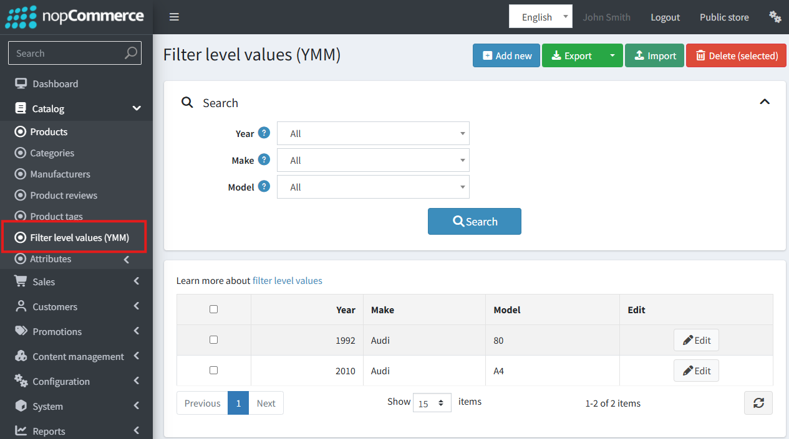
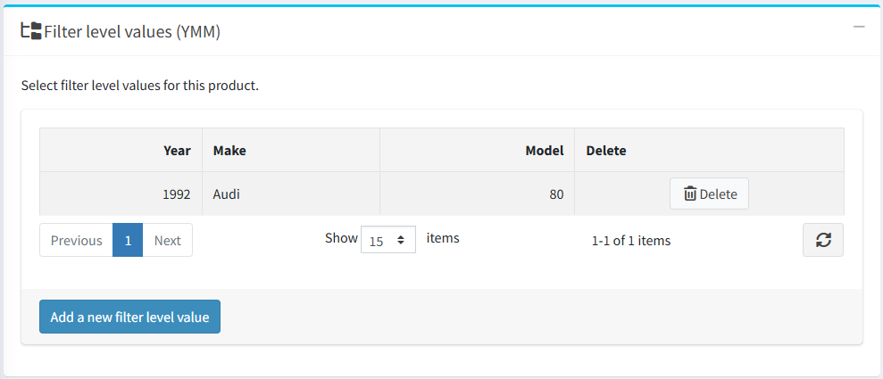
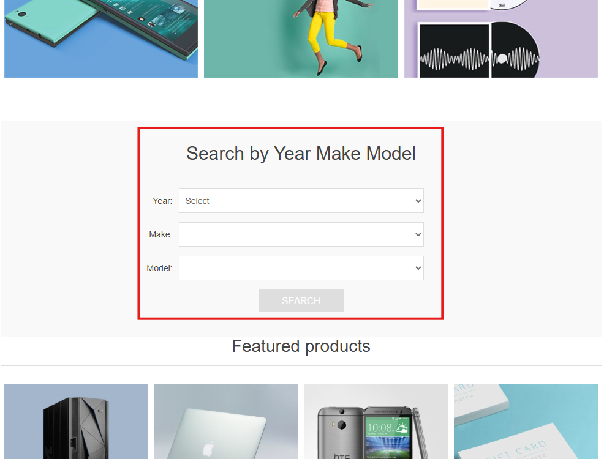
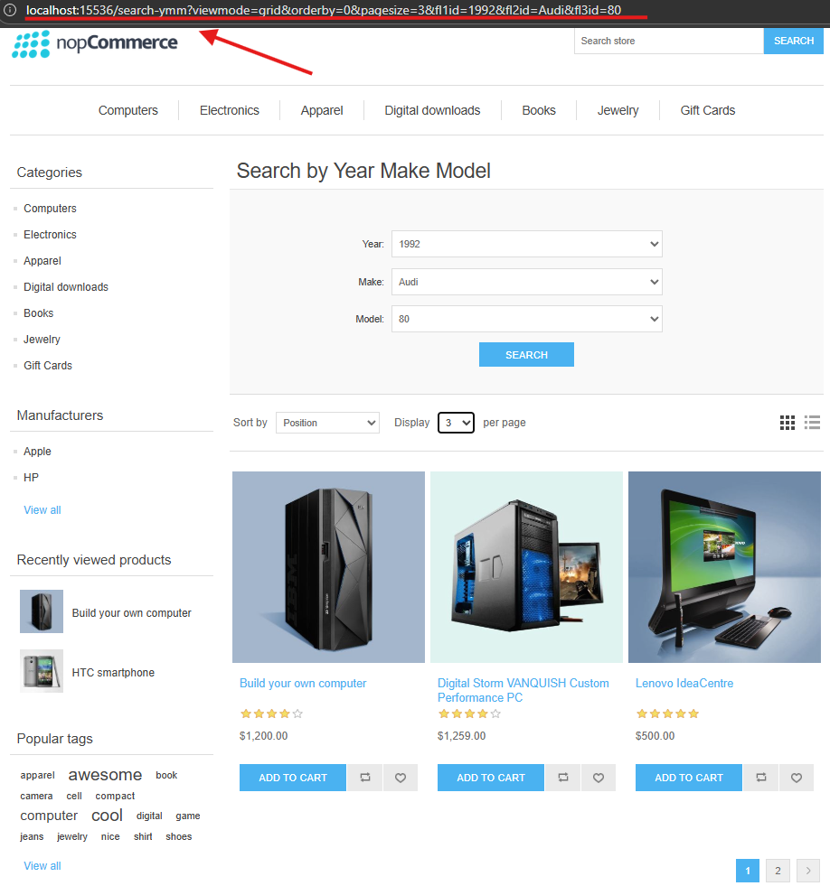

YMM (Year-Make-Model) 篩選器
總覽
YMM (Year-Make-Model，年份-廠牌-型號) 篩選器讓顧客能透過結構化的多層次篩選系統來尋找商品。儘管其名稱暗示用於汽車產業，但此功能具有高度自訂性，可應用於任何需要相容性檢查的商品目錄，例如電子零件（例如：依「廠牌、型號、顯示尺寸」進行篩選）。
其核心目的是協助顧客輕鬆找到與特定車輛或產品相容的零件，進而提升使用者體驗並減少購買錯誤的可能性。
主要功能
- 可設定的多層次篩選： 管理員最多可定義三個巢狀篩選層級（例如：年份 → 廠牌 → 型號）。
- 靈活的數值管理： 透過管理後台或 Excel 匯入/匯出功能，即可輕鬆新增、編輯及大量管理篩選值（例如：2023、Audi、A4）。
- 商品與篩選器對應： 將商品指派給一個或多個相容的篩選組合，以確保精確的搜尋結果。
- 無縫整合前台網站： 在首頁顯示篩選器以便於操作，並在商品頁面顯示詳細的相容性資訊。
管理後台設定
篩選器設定
若要設定此功能，請前往 設定 → 設定 → 篩選器 (YMM) 設定。

Enabled：這是用來啟用或停用網站上所有 YMM 功能的總開關。預設為停用。Display on home page：勾選此方塊可在網站首頁顯示 YMM 篩選區塊。Display filter values on product details page：勾選後，商品頁面會出現一個「相容於」表格，列出所有相關聯的篩選組合。預設為啟用。
篩選層級網格
您可以在此自訂三個可用的篩選層級：

- Enabled： 啟用或停用各個層級。
- Name： 為每個層級設定一個可自訂且可在地化的名稱。
Note
在預設情況下，新安裝的系統會設定並啟用「年份 (Year)」、「廠牌 (Make)」和「型號 (Model)」。
Warning
若子層級目前處於啟用狀態，則無法停用其父層級。
管理篩選值
若要建立及管理每個篩選層級的選項，請前往 目錄 → 篩選層級值 (YMM)。

建立與編輯數值： 管理員可以針對已啟用的篩選層級新增或編輯數值組合（例如：年份：2024、廠牌：BMW、型號：X5）。系統會防止重複組合的建立。

商品對應： 建立或編輯數值組時，會出現一個新視窗，您可以在其中將商品直接對應到該特定組合。此視窗也會顯示已對應的商品。
管理功能：
- 篩選： 管理網格可透過每個啟用層級進行篩選，以快速找到項目。
- 匯入/匯出： 使用 Excel 匯入與匯出工具大量管理篩選值。
- 刪除選取項目： 同時移除多個數值組合。
從商品編輯頁面進行對應
您也可以直接從商品的設定頁面管理對應關係。
前往 目錄 → 商品 並開啟商品進行編輯。
找到新的 「篩選層級值 (YMM)」 面板（位於「交叉銷售」面板之後）。

您可以在此新增或移除商品與現有篩選組合之間的關聯。
前台網站功能
首頁篩選器
如果已啟用在首頁顯示的功能，顧客將會看到一個包含各個啟用篩選層級下拉式選單的篩選區塊。

這些下拉式選單是相依且循序的。必須先在第一層篩選器（例如「年份」）中選擇一個值，第二層下拉式選單（例如「廠牌」）才會變為可操作，依此類推。
搜尋結果頁面
搜尋動作僅會在顧客針對所有已啟用的篩選層級皆選定數值後才會執行。 點擊 搜尋 後，使用者將被重新導向至專屬的 YMM 搜尋結果頁面。

此頁面會在頂部顯示所選的篩選條件，並在下方顯示所有符合條件的商品分頁列表。
商品詳細頁面
如果對應的設定已啟用，商品頁面上會顯示一個標題為 「相容於」 的表格。此表格清楚列出了該特定商品所相容的所有 YMM 組合，讓顧客對他們的購買更有信心。